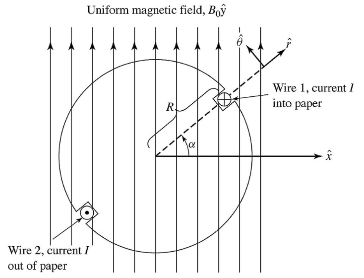
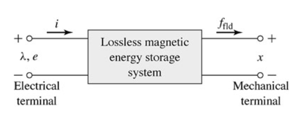
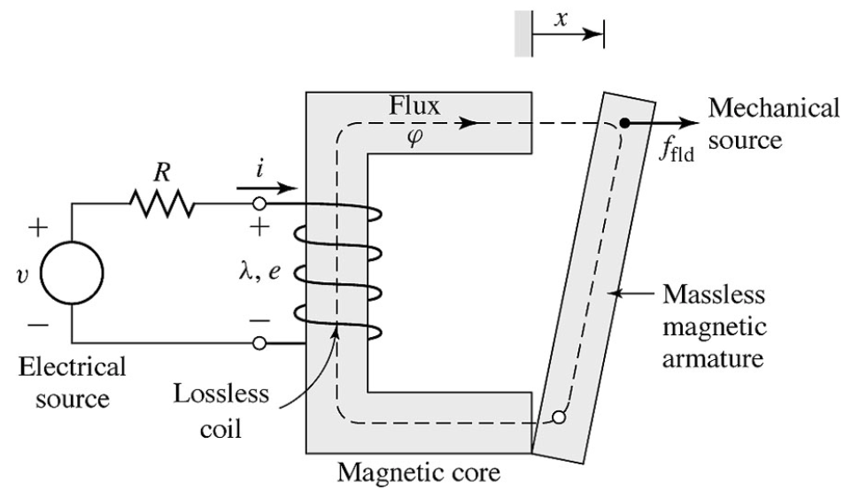

class: center, middle # EE-361 # Electromechanical Energy Conversion ## Ozan Keysan [keysan.me](http://keysan.me) Office: C-113 <span class="meta">•</span> Tel: 210 7586 --- # Lorenz Force ## \\(\vec{F} = q (\vec{E} + \vec{v} \times \vec{B})\\) -- ### In a purely magnetic system (no electric field) : ## \\(\vec{F} = q \vec{v} \times \vec{B}\\) -- ### or alternatively force density (\\(N/m^3\\))): ## \\(\vec{f} = \rho \vec{v} \times \vec{B} = \vec{J} \times \vec{B}\\) #### \\( \rho \\): Charge density (C/m3) , \\( \vec{v} \\): velocity --- #Lorenz Force ## \\(\vec{F} = \vec{J} \times \vec{B}\\)  --- # Lorenz Force Applications - ### [Force Demo](http://www.youtube.com/watch?v=K9ks_DNPAFQ) - ### [Homopolar Motor](http://www.youtube.com/watch?v=kJKuNcgbW-o) - ### [Wolrd's Simplest Electric Train](https://www.youtube.com/watch?v=J9b0J29OzAU) - ### [Electromagnetic Aircraft Launcher](https://www.youtube.com/watch?v=T1Icd3MFmWc) - ### [Navy Railgun](https://www.youtube.com/watch?v=NmFeRYPNP88), [Railgun-2](https://www.youtube.com/watch?v=8UKk84wjBw0) - ### [Aselsan Tufan](https://www.youtube.com/watch?v=O5GtuQk3t44) - ### [Aselsan Tufan-2](https://www.youtube.com/watch?v=El4VQko6GFI) --- # Determine the direction of rotation  --- #What would happen in the device below? <img src="./images/emec_double_relay.png" alt="Drawing" style="width: 800px;"/> --- # Basics - ## Forces and Torque -- - ## Energy Balance -- - ## Stored Energy (Magnetic and Mechanical) -- - ## Losses --- # Losses - ## Electric Losses (Ohmic Losses) -- - ## Magnetic Losses (Hysteresis Loss) -- - ## Mechanical Losses (Friction etc) --- # Lossless System  -- ### Electric Energy Input = Stored Magnetic Energy + Mechanical Work --- # Energy Balance  --- # Energy Balance ### Ignore resistive and friction losses -- ### \\(\Delta W\_{electrical} = \Delta W\_{magnetic} + \Delta W\_{mechanical}\\) -- ### \\( Vi\, \mathrm{d}t = i \, \mathrm{d}\lambda = \Delta W\_{magnetic} + f_{mech} \, \mathrm{d}x\\) ### or -- ## \\( \Delta W\_{magnetic} = i \, \mathrm{d}\lambda - f_{mech} \, \mathrm{d}x\\) --- # Energy Balance ## Same can be obtained from the power relations ## \\( \dfrac{\partial W\_{magnetic}}{\partial t} = V.i - f_{mech} \dfrac{\partial x}{\partial t} \\) -- ## \\( \dfrac{\partial W\_{magnetic}}{\partial t} = i \dfrac{\partial \lambda}{\partial t} - f_{mech} \dfrac{\partial x}{\partial t} \\) --- # Review: Magnetic Energy  --- # Review: Magnetic Energy ## \\(W\_{stored} = \int_0^\lambda i(\lambda) d\lambda \\) -- ## or from B-H curve ## \\(W\_{stored} = \int \_{volume } (\int_0^B H dB) \\) --- # Magnetic Energy ### In Linear Systems: -- ## Magnetic Energy = Magnetic Co-Energy -- ## Magnetic Energy + Magnetic Co-Energy = \\(\lambda i\\) -- ### Thus (only in linear systems) ## W(magnetic) = \\(\dfrac{1}{2} \lambda i = \dfrac{1}{2} L i^2 =\dfrac{1}{2L} \lambda^2 \\) --- # Singly-Excited Electromechanical System  --- # Example: --- # Example: ### Find magnetic stored energy as a function of x. (I=10 A) <img src="./images/emec_ex2.png" alt="Drawing" style="width: 800px;"/> --- # Example Cont: ### Find magnetic stored energy if N=1000, g=2mm, d=15cm, l=10cm <img src="./images/emec_ex2.png" alt="Drawing" style="width: 800px;"/> --- # Force from the Stored Energy <img src="./images/DSC09854-SCottish-festival.jpg" alt="Drawing" style="width: 600px;"/> -- ## Derivative of Energy w.r.t. position gives the force! --- # Force from Stored Energy ## \\(W\_{magnetic} = i d\lambda - f dx\\) ### Take derivative -- ### Some useful reading: - #### [MIT From Lasers to Motors](http://ocw.mit.edu/courses/electrical-engineering-and-computer-science/6-007-electromagnetic-energy-from-motors-to-lasers-spring-2011/readings/MIT6_007S11_forces.pdf) - #### [Fitzgerald-Electromechanical Energy Conversion](http://cnx.org/contents/XKs0ES7Y@1/Chapter-3Electromechanical-Ene) --- # Force from Stored Energy ### \\(Force = - \dfrac{\partial W\_{mag}(\lambda, x)}{\partial x} |\_{\lambda = constant}\\) -- ## For Linear Systems ### \\(Force = - \dfrac{\partial}{\partial x} (\dfrac{\lambda^2}{2 L(x)}) =\dfrac{ \lambda^2}{2 L(x)^2} (\dfrac{d L(x)}{dx}) \\) -- ### \\(Force = \dfrac{i^2}{2} \dfrac{d L(x)}{dx} \\) --- # Example: Previous Example ### Derive the force as a function of position <img src="./images/emec_ex2.png" alt="Drawing" style="width: 800px;"/> --- # Example: [Junkyard Magnet](https://www.youtube.com/watch?v=XBWy9gzGGd4) -- ### Derive the force: <img src="./images/junkyard_magnet_example.png" alt="Drawing" style="width: 500px;"/> --- # Virtual Work Method -- ## When \\(\Phi\\) is constant: ### \\(Force = - \dfrac{\partial W\_{mag}(\Phi, x)}{\partial x} |\_{\Phi = constant}\\) --- # Virtual Work Method -- ## Use Co-energy (\\(W\_{mag}'\\)) instead of Magnetic Energy -- ## When MMF (\\(NI\\)) is constant: ### \\(Force = \dfrac{\partial W'\_{mag}(\mathrm{F}, x)}{\partial x} |\_{\mathrm{F} = constant}\\) --- # Some Applications -- ## How a speaker works? <img src="http://www.cybersuitors.net/wp-content/uploads/2017/10/speaker-ope-100000719-orig.jpg" alt="Drawing" style="width: 500px;"/> --- # Some Applications ## How a speaker works? ## Just a basic solenoid ## [How Speakers Work](http://animagraffs.com/loudspeaker/) #### ([Reading assignment](http://ocw.mit.edu/courses/electrical-engineering-and-computer-science/6-007-electromagnetic-energy-from-motors-to-lasers-spring-2011/lecture-notes/MIT6_007S11_lec13.pdf)) --- # Who is this guy? <img src="https://fm.cnbc.com/applications/cnbc.com/resources/img/editorial/2016/03/23/103492187-AP_37716130966.1910x1000.jpg" alt="Drawing" style="width: 700px;"/> --- # [Amar Bose](http://www.rle.mit.edu/bose/) ### Founder of Bose Corp, MIT Professor, Electrical Engineering <img src="https://www.cnet.com/a/img/resize/5d5ade0d9c2295b58b9cf6dda046262e51c29f04/hub/2015/09/01/35d677b5-4b15-4e3b-a0bf-38e9c9d36907/06bose-soundlink-around-ear-wireless-headphones-ii.jpg?auto=webp&width=768" alt="Drawing" style="width: 500px;"/> ### [How Amar Bose used research to build better speakers](https://www.cnbc.com/2016/03/24/how-amar-bose-used-research-to-build-better-speakers.html) ### Now MIT owns the [majority shares](http://archive.boston.com/business/technology/articles/2011/04/30/mit_is_new_majority_owner_of_bose/) in Bose Corp. --- # Magnetism in Medicine: -- # [Malaria](https://www.youtube.com/watch?v=A2-XTlHBf_4) <img src="http://3.bp.blogspot.com/-gUOAxhCXjP0/UAfo1I4Y1uI/AAAAAAAAHGo/tO885WRQXrc/s1600/Malaria+Disease2.jpg" alt="Drawing" style="width: 300px;"/> --- # Malaria vs Permeability -- ## Diagnosis using Magnetic Alignment <img src="https://www.researchgate.net/profile/Xin-Zhang-33/publication/316325910/figure/fig22/AS:987638823669762@1612482853732/Malaria-infected-RBC-separation-using-a-high-magnetic-field-gradient-a-Schematic.ppm" alt="Drawing" style="width: 600px;"/> ### [Magnets diagnose malaria in minutes](http://news.mit.edu/2014/new-method-diagnose-malaria-0831) --- # Malaria vs Permeability ## Diagnosis using Magnetic Alignment <img src="http://images.iop.org/objects/phw/news/16/10/27/PW-2012-10-30-magnetic-malaria_figure2.jpg" alt="Drawing" style="width: 700px;"/> ### [Physicists detect malaria using light and magnets](http://physicsworld.com/cws/article/news/2012/oct/30/physicists-detect-malaria-using-light-and-magnets) --- # Malaria Treatment <img src="http://www.cmu.edu/news/stories/archives/2016/june/images/malaria_853x480-min.jpg" alt="Drawing" style="width: 700px;"/> ### [Malaria's Magnetic Properties May Pull Treatments Forward](http://www.cmu.edu/news/stories/archives/2016/june/malaria-magnetic-treatment.html) --- # Rail Gun Example: <img src="http://pop.h-cdn.co/assets/16/22/768x496/gallery-1465165715-3mpujgm.jpg" alt="Drawing" style="width: 500px;"/> ###[Mini Coil Gun](http://www.youtube.com/watch?v=lIEgg7d8ZsU), [Large Rail Gun](http://www.youtube.com/watch?v=wa_vuX5_oAk), [Part-2](http://www.youtube.com/watch?v=rAwvnXYH488), [How it works](http://www.youtube.com/watch?v=PQNHsS-BNs4) ### [Reading assignment](http://ocw.mit.edu/courses/electrical-engineering-and-computer-science/6-007-electromagnetic-energy-from-motors-to-lasers-spring-2011/lecture-notes/MIT6_007S11_lec14.pdf) --- # Summary ## Magnetic Circuit Tries -- - ## To reduce \\(W\_{magnetic}\\) if \\(\Phi\\) is constant -- - ## To maximize the inductance -- - ## To minimize the reluctance (\\(L=N^2/R\\)) --- ## You can download this presentation from: [keysan.me/ee361](http://keysan.me/ee361)